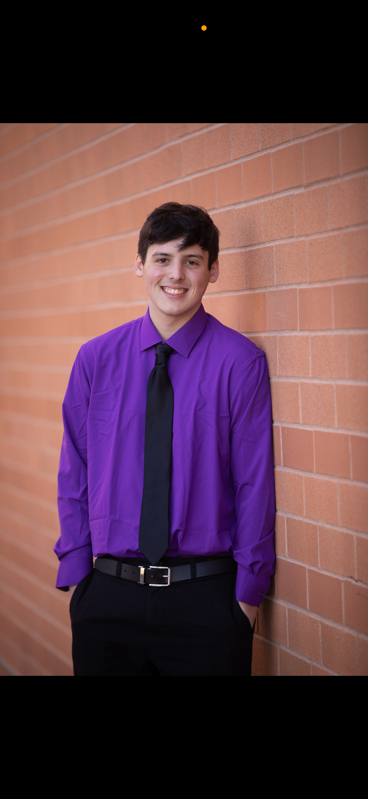

Jamieson is a Sophmore Brodcast and Digital Journalism Student at Syracuse University. He comes from a small town in Western Massachusetts called Athol. Jamieson has loved sports his entire life, playing them since he was 5 years old. He has known he has watned to be in the sports media industry since he was 12 because he says "Nothing sounds better than talking about sports for a living"
